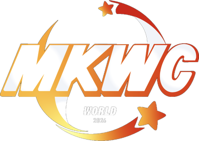

MKWC
2026
Suivi en direct
Accueil
Classements & Bracket
Calendrier
Équipes
Joueurs
Coupe du Monde Mario Kart World
31 équipes nationales · Qualification → Phase de groupes → Bracket final
10 JUIL → 2 AOÛT 2026